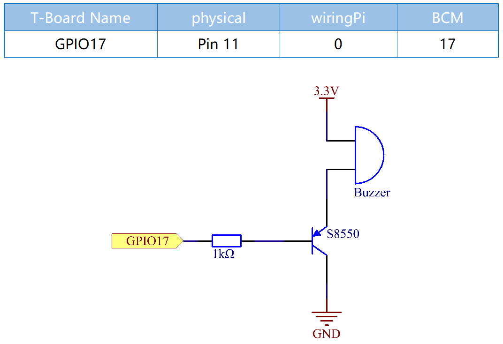

1.2.1 Aktiver Summer¶
Einführung¶
In dieser Lektion lernen wir, wie man einen aktiven Summer ansteuert, um mit einem PNP-Transistor zu piepen.
Komponenten¶

Prinzip¶
Summer
Als eine Art elektronischer Summer mit integrierter Struktur werden Summer, die mit Gleichstrom versorgt werden, häufig in Computern, Druckern, Fotokopierern, Alarmen, elektronischem Spielzeug, elektronischen Kraftfahrzeugen, Telefonen, Zeitschaltuhren und anderen elektronischen Produkten oder Sprachgeräten verwendet. Summer können in aktive und passive unterteilt werden (siehe folgendes Bild). Drehen Sie den Summer so, dass seine Stifte nach oben zeigen, und der Summer mit einer grünen Leiterplatte ist ein passiver Summer, während der mit einem schwarzen Band umschlossene ein aktiver ist.
Der Unterschied zwischen einem aktiven und einem passiven Summer:

Der Unterschied zwischen einem aktiven und einem passiven Summer besteht darin, dass ein aktiver Summer über eine integrierte Oszillationsquelle verfügt, sodass er bei Elektrifizierung Geräusche erzeugt. Ein passiver Summer verfügt jedoch nicht über eine solche Quelle, sodass bei Verwendung von Gleichstromsignalen kein Piepton ertönt. Stattdessen müssen Sie Rechteckwellen verwenden, deren Frequenz zwischen 2K und 5K liegt, um sie anzutreiben. Der aktive Summer ist aufgrund mehrerer eingebauter Schwingkreise oft teurer als der passive.
Das Folgende ist das elektrische Symbol eines Summers. Es hat zwei Stifte mit positiven und negativen Polen. Mit einem + in der Oberfläche steht die Anode und das andere ist die Kathode.

Sie können die Pins des Summers überprüfen, je länger die Anode und je kürzer die Kathode ist. Bitte verwechseln Sie sie beim Anschließen nicht, da sonst kein Summer ertönt.
Schematische Darstellung¶
In diesem Experiment werden ein aktiver Summer, ein PNP-Transistor und ein 1k-Widerstand zwischen der Basis des Transistors und GPIO verwendet, um den Transistor zu schützen. Wenn der GPIO17 des Raspberry Pi-Ausgangs durch Programmierung mit einem niedrigen Niveau (0V) versorgt wird, leitet der Transistor aufgrund der Stromsättigung und der Summer gibt Geräusche aus. Wenn jedoch die IO des Raspberry Pi mit einem hohen Niveau versorgt wird, wird der Transistor abgeschaltet und der Summer gibt keine Geräusche von sich.
Experimentelle Verfahren¶
Schritt 1: Bauen Sie die Schaltung auf. (Achten Sie auf die Pole des Summers: Der mit dem + Etikett ist der positive Pol und der andere der negative.)

Für Benutzer in C-Sprache¶
Schritt 2: Öffnen Sie die Codedatei.
cd /home/pi/davinci-kit-for-raspberry-pi/c/1.2.1/
Schritt 3: Kompilieren Sie den Code.
gcc 1.2.1_ActiveBuzzer.c -lwiringPi
Schritt 4: Führen Sie die obige ausführbare Datei aus.
sudo ./a.out
Die Kode läuft, der Summer piept.
Kode
#include <wiringPi.h>
#include <stdio.h>
#define BeepPin 0
int main(void){
if(wiringPiSetup() == -1){ //when initialize wiring failed, print messageto screen
printf("setup wiringPi failed !");
return 1;
}
pinMode(BeepPin, OUTPUT); //set GPIO0 output
while(1){
//beep on
printf("Buzzer on\n");
digitalWrite(BeepPin, LOW);
delay(100);
printf("Buzzer off\n");
//beep off
digitalWrite(BeepPin, HIGH);
delay(100);
}
return 0;
}
Kode Erklärung
digitalWrite(BeepPin, LOW);
In diesem Experiment verwenden wir einen aktiven Summer, der beim Anschließen an den Gleichstrom automatisch einen Ton erzeugt. Diese Skizze dient dazu, den I/O -Port auf einen niedrigen Niveau (0V) einzustellen, um so den Transistor zu verwalten und den Summer piepen zu lassen.
digitalWrite(BeepPin, HIGH);
Um den /O -Anschluss auf einen hohen Niveau (3,3V) einzustellen, wird der Transistor nicht erregt und der Summer piept nicht.
Für Python-Sprachbenutzer¶
Schritt 2: Öffnen Sie die Codedatei.
cd /home/pi/davinci-kit-for-raspberry-pi/python
Schritt 3: Ausführen.
sudo python3 1.2.1_ActiveBuzzer.py
Die Kode läuft, der Summer piept.
Kode
import RPi.GPIO as GPIO
import time
# Set GPIO17 as buzzer pin
BeepPin = 17
def setup():
GPIO.setmode(GPIO.BCM)
GPIO.setup(BeepPin, GPIO.OUT, initial=GPIO.HIGH)
def main():
while True:
# Buzzer on (Beep)
print ('Buzzer On')
GPIO.output(BeepPin, GPIO.LOW)
time.sleep(0.1)
# Buzzer off
print ('Buzzer Off')
GPIO.output(BeepPin, GPIO.HIGH)
time.sleep(0.1)
def destroy():
# Turn off buzzer
GPIO.output(BeepPin, GPIO.HIGH)
# Release resource
GPIO.cleanup()
# If run this script directly, do:
if __name__ == '__main__':
setup()
try:
main()
# When 'Ctrl+C' is pressed, the program
# destroy() will be executed.
except KeyboardInterrupt:
destroy()
Kode Erklärung
GPIO.output(BeepPin, GPIO.LOW)
Stellen Sie den Summer Pin auf einen niedrigen Niveau ein, damit der Summer piept.
time.sleep(0.1)
Warten Sie 0,1 Sekunden. Ändern Sie die Schaltfrequenz, indem Sie diesen Parameter ändern.
Bemerkung
Nicht die Schallfrequenz. Der aktive Summer kann die Schallfrequenz nicht ändern.
GPIO.output(BeepPin, GPIO.HIGH)
Schließen Sie den Summer.
Phänomen Bild¶